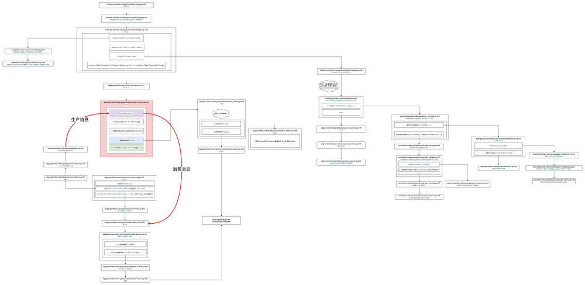
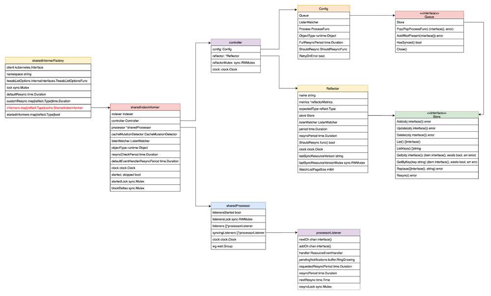
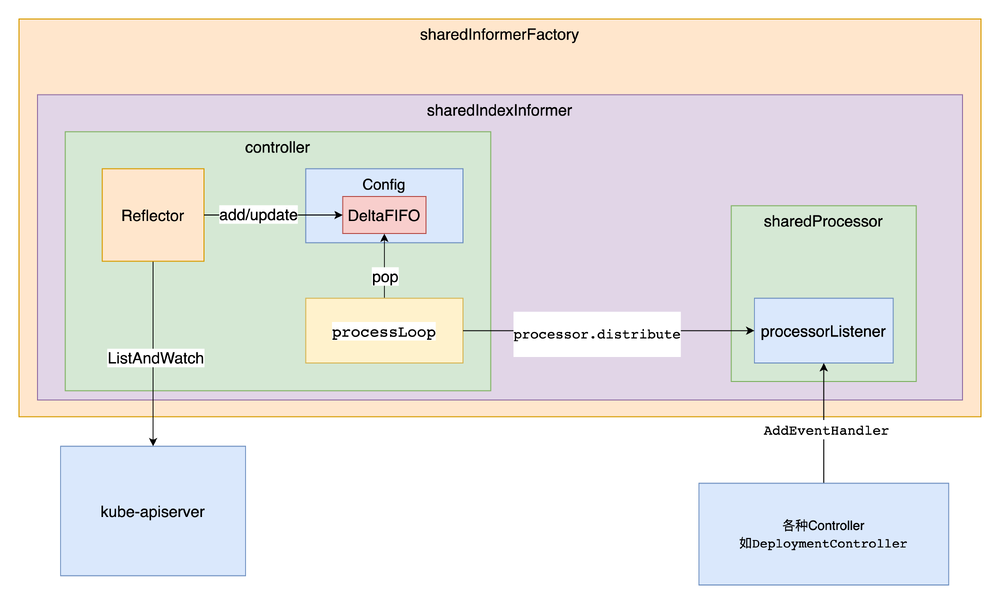

Informer原理图
为了便于理解，先上两张图。
源码的调用流程图
可以对照着图中的代码文件及代码行数跟下代码。
注: 图中的代码行数基于1.15版。

数据结构图

Informer 工厂
先来看下cmd/kube-controller-manager/app/controllermanager.go:162的Run方法。
func Run(c *config.CompletedConfig, stopCh <-chan struct{}) error {
...
run := func(ctx context.Context) {
rootClientBuilder := controller.SimpleControllerClientBuilder{
ClientConfig: c.Kubeconfig,
}
var clientBuilder controller.ControllerClientBuilder
if c.ComponentConfig.KubeCloudShared.UseServiceAccountCredentials {
if len(c.ComponentConfig.SAController.ServiceAccountKeyFile) == 0 {
// It's possible another controller process is creating the tokens for us.
// If one isn't, we'll timeout and exit when our client builder is unable to create the tokens.
klog.Warningf("--use-service-account-credentials was specified without providing a --service-account-private-key-file")
}
if shouldTurnOnDynamicClient(c.Client) {
klog.V(1).Infof("using dynamic client builder")
//Dynamic builder will use TokenRequest feature and refresh service account token periodically
clientBuilder = controller.NewDynamicClientBuilder(
restclient.AnonymousClientConfig(c.Kubeconfig),
c.Client.CoreV1(),
"kube-system")
} else {
klog.V(1).Infof("using legacy client builder")
clientBuilder = controller.SAControllerClientBuilder{
ClientConfig: restclient.AnonymousClientConfig(c.Kubeconfig),
CoreClient: c.Client.CoreV1(),
AuthenticationClient: c.Client.AuthenticationV1(),
Namespace: "kube-system",
}
}
} else {
clientBuilder = rootClientBuilder
}
controllerContext, err := CreateControllerContext(c, rootClientBuilder, clientBuilder, ctx.Done())
if err != nil {
klog.Fatalf("error building controller context: %v", err)
}
saTokenControllerInitFunc := serviceAccountTokenControllerStarter{rootClientBuilder: rootClientBuilder}.startServiceAccountTokenController
if err := StartControllers(controllerContext, saTokenControllerInitFunc, NewControllerInitializers(controllerContext.LoopMode), unsecuredMux); err != nil {
klog.Fatalf("error starting controllers: %v", err)
}
controllerContext.InformerFactory.Start(controllerContext.Stop)
controllerContext.GenericInformerFactory.Start(controllerContext.Stop)
close(controllerContext.InformersStarted)
select {}
}
}
...
上面代码中比较重要的几个方法CreateControllerContext, StartControllers, controllerContext.InformerFactory.Start。
创建ControllerContext
再次进入CreateControllerContext方法中, 一直跟下去, 最终会调用到vendor/k8s.io/client-go/informers/factory.go:108的NewSharedInformerFactoryWithOptions方法。
func NewSharedInformerFactoryWithOptions(client kubernetes.Interface, defaultResync time.Duration, options ...SharedInformerOption) SharedInformerFactory {
factory := &sharedInformerFactory{
client: client,
namespace: v1.NamespaceAll,
defaultResync: defaultResync,
informers: make(map[reflect.Type]cache.SharedIndexInformer),
startedInformers: make(map[reflect.Type]bool),
customResync: make(map[reflect.Type]time.Duration),
}
// Apply all options
for _, opt := range options {
factory = opt(factory)
}
return factory
}
从上面的代码中, sharedInformerFactory结构体中，有一个informers的map，这个map的key为资源类型，value为关注该资源类型的Informer。
启动所有内置的Controller
再来看StartControllers方法, 调用StartControllers之前, 会先调用NewControllerInitializers方法。
func NewControllerInitializers(loopMode ControllerLoopMode) map[string]InitFunc {
controllers := map[string]InitFunc{}
...
controllers["deployment"] = startDeploymentController
...
return controllers
}
通过这个方法可以返回所有的内置controller, 这里map中的value存的只是相应的回调函数, 此时还没调用, 在StartControllers方法中会实际调用。
接下来调用StartControllers方法。
func StartControllers(ctx ControllerContext, startSATokenController InitFunc, controllers map[string]InitFunc, unsecuredMux *mux.PathRecorderMux) error {
...
for controllerName, initFn := range controllers {
...
debugHandler, started, err := initFn(ctx)
...
}
return nil
}
这里循环NewControllerInitializers方法返回的所有controller, 取到map的value, 然后调用.
启动各个Controller
再来看上一步的initFn, 也就是各个startXXXController方法, 我们以startDeploymentController为例,
func startDeploymentController(ctx ControllerContext) (http.Handler, bool, error) {
if !ctx.AvailableResources[schema.GroupVersionResource{Group: "apps", Version: "v1", Resource: "deployments"}] {
return nil, false, nil
}
dc, err := deployment.NewDeploymentController(
ctx.InformerFactory.Apps().V1().Deployments(),
ctx.InformerFactory.Apps().V1().ReplicaSets(),
ctx.InformerFactory.Core().V1().Pods(),
ctx.ClientBuilder.ClientOrDie("deployment-controller"),
)
if err != nil {
return nil, true, fmt.Errorf("error creating Deployment controller: %v", err)
}
go dc.Run(int(ctx.ComponentConfig.DeploymentController.ConcurrentDeploymentSyncs), ctx.Stop)
return nil, true, nil
}
deployment.NewDeploymentController函数创建了Deployment Controller，而该创建函数的前三个参数分别为 Deployment、ReplicaSet、Pod 的 Informer. 可以看到, Informer的单例工厂以 ApiGroup 为路径提供了不同资源的 Informer.
.Apps().V1().Deployments()方法返回的虽然叫DeploymentInformer, 但这不是真正的Informer
func (v *version) Deployments() DeploymentInformer {
return &deploymentInformer{factory: v.factory, namespace: v.namespace, tweakListOptions: v.tweakListOptions}
}
真正的Informer是在调用NewDeploymentController -> dInformer.Informer() -> f.factory.InformerFor方法创建的
func NewDeploymentController(dInformer appsinformers.DeploymentInformer, rsInformer appsinformers.ReplicaSetInformer, podInformer coreinformers.PodInformer, client clientset.Interface) (*DeploymentController, error) {
eventBroadcaster := record.NewBroadcaster()
eventBroadcaster.StartLogging(klog.Infof)
eventBroadcaster.StartRecordingToSink(&v1core.EventSinkImpl{Interface: client.CoreV1().Events("")})
if client != nil && client.CoreV1().RESTClient().GetRateLimiter() != nil {
if err := metrics.RegisterMetricAndTrackRateLimiterUsage("deployment_controller", client.CoreV1().RESTClient().GetRateLimiter()); err != nil {
return nil, err
}
}
dc := &DeploymentController{
client: client,
eventRecorder: eventBroadcaster.NewRecorder(scheme.Scheme, v1.EventSource{Component: "deployment-controller"}),
queue: workqueue.NewNamedRateLimitingQueue(workqueue.DefaultControllerRateLimiter(), "deployment"),
}
dc.rsControl = controller.RealRSControl{
KubeClient: client,
Recorder: dc.eventRecorder,
}
dInformer.Informer().AddEventHandler(cache.ResourceEventHandlerFuncs{
AddFunc: dc.addDeployment,
UpdateFunc: dc.updateDeployment,
// This will enter the sync loop and no-op, because the deployment has been deleted from the store.
DeleteFunc: dc.deleteDeployment,
})
rsInformer.Informer().AddEventHandler(cache.ResourceEventHandlerFuncs{
AddFunc: dc.addReplicaSet,
UpdateFunc: dc.updateReplicaSet,
DeleteFunc: dc.deleteReplicaSet,
})
podInformer.Informer().AddEventHandler(cache.ResourceEventHandlerFuncs{
DeleteFunc: dc.deletePod,
})
dc.syncHandler = dc.syncDeployment
dc.enqueueDeployment = dc.enqueue
dc.dLister = dInformer.Lister()
dc.rsLister = rsInformer.Lister()
dc.podLister = podInformer.Lister()
dc.dListerSynced = dInformer.Informer().HasSynced
dc.rsListerSynced = rsInformer.Informer().HasSynced
dc.podListerSynced = podInformer.Informer().HasSynced
return dc, nil
}
# staging/src/k8s.io/client-go/informers/apps/v1/deployment.go:83
func (f *deploymentInformer) Informer() cache.SharedIndexInformer {
return f.factory.InformerFor(&appsv1.Deployment{}, f.defaultInformer)
}
# staging/src/k8s.io/client-go/informers/apps/v1/deployment.go:79
func (f *deploymentInformer) defaultInformer(client kubernetes.Interface, resyncPeriod time.Duration) cache.SharedIndexInformer {
return NewFilteredDeploymentInformer(client, f.namespace, resyncPeriod, cache.Indexers{cache.NamespaceIndex: cache.MetaNamespaceIndexFunc}, f.tweakListOptions)
}
# staging/src/k8s.io/client-go/informers/factory.go:163
func (f *sharedInformerFactory) InformerFor(obj runtime.Object, newFunc internalinterfaces.NewInformerFunc) cache.SharedIndexInformer {
f.lock.Lock()
defer f.lock.Unlock()
informerType := reflect.TypeOf(obj)
informer, exists := f.informers[informerType]
if exists {
return informer
}
resyncPeriod, exists := f.customResync[informerType]
if !exists {
resyncPeriod = f.defaultResync
}
informer = newFunc(f.client, resyncPeriod)
f.informers[informerType] = informer
return informer
}
从上面的InformerFor方法可以看到,
- 如果Informer工厂里已经存在informer, 就直接返回了, 也就是说一种资源始终只有一个informer
- 如果不存在, 则调用传进来的参数
newFunc实例化informer(注:newFunc即为defaultInformer, 返回的类型为cache.SharedIndexInformer
至此, DeploymentInformer被实例化，并真正的承担Informer的职责, 同时添加到Informer工厂的map中.
InformerFactory启动
func (f *sharedInformerFactory) Start(stopCh <-chan struct{}) {
f.lock.Lock()
defer f.lock.Unlock()
for informerType, informer := range f.informers {
if !f.startedInformers[informerType] {
go informer.Run(stopCh)
f.startedInformers[informerType] = true
}
}
}
# staging/src/k8s.io/client-go/tools/cache/shared_informer.go:242
func (s *sharedIndexInformer) Run(stopCh <-chan struct{}) {
defer utilruntime.HandleCrash()
fifo := NewDeltaFIFO(MetaNamespaceKeyFunc, s.indexer)
cfg := &Config{
Queue: fifo,
ListerWatcher: s.listerWatcher,
ObjectType: s.objectType,
FullResyncPeriod: s.resyncCheckPeriod,
RetryOnError: false,
ShouldResync: s.processor.shouldResync,
Process: s.HandleDeltas,
}
func() {
s.startedLock.Lock()
defer s.startedLock.Unlock()
s.controller = New(cfg)
s.controller.(*controller).clock = s.clock
s.started = true
}()
// Separate stop channel because Processor should be stopped strictly after controller
processorStopCh := make(chan struct{})
var wg wait.Group
defer wg.Wait() // Wait for Processor to stop
defer close(processorStopCh) // Tell Processor to stop
wg.StartWithChannel(processorStopCh, s.cacheMutationDetector.Run)
wg.StartWithChannel(processorStopCh, s.processor.run)
defer func() {
s.startedLock.Lock()
defer s.startedLock.Unlock()
s.stopped = true // Don't want any new listeners
}()
s.controller.Run(stopCh)
}
sharedIndexInformer的Run方法代码不多，但是很重要，这块逻辑即为第一张图中粉红色的地方，主要做了下面几件事：
- 初始化fifo队列
- 初始化controller
- 启动cacheMutationDetector
- 启动processor
- 运行controller(此controller非XXXController)
接下来, 看下这几件事情的详细过程
sharedIndexInformer
我们先把视线拉回到上面第一张图片的最右侧, 因为这块做了一些初始化的工作，以便后面的逻辑使用。
func NewSharedIndexInformer(lw ListerWatcher, objType runtime.Object, defaultEventHandlerResyncPeriod time.Duration, indexers Indexers) SharedIndexInformer {
realClock := &clock.RealClock{}
sharedIndexInformer := &sharedIndexInformer{
processor: &sharedProcessor{clock: realClock},
indexer: NewIndexer(DeletionHandlingMetaNamespaceKeyFunc, indexers),
listerWatcher: lw,
objectType: objType,
resyncCheckPeriod: defaultEventHandlerResyncPeriod,
defaultEventHandlerResyncPeriod: defaultEventHandlerResyncPeriod,
cacheMutationDetector: NewCacheMutationDetector(fmt.Sprintf("%T", objType)),
clock: realClock,
}
return sharedIndexInformer
}
在sharedIndexInformer的初始化逻辑中, 初始化了
- processor: 提供了 EventHandler 注册和事件分发的功能
- indexer: 提供了资源缓存的功能
- listerWatcher: 由模板类提供，包含特定资源的 List 和 Watch 方法
- objectType: 用来标记关注哪种特定资源类型
- cacheMutationDetector: 监控 Informer 的缓存
sharedProcessor
type sharedProcessor struct {
listenersStarted bool
listenersLock sync.RWMutex
listeners []*processorListener
syncingListeners []*processorListener
clock clock.Clock
wg wait.Group
}
type processorListener struct {
nextCh chan interface{}
addCh chan interface{}
handler ResourceEventHandler
// pendingNotifications is an unbounded ring buffer that holds all notifications not yet distributed.
// There is one per listener, but a failing/stalled listener will have infinite pendingNotifications
// added until we OOM.
// TODO: This is no worse than before, since reflectors were backed by unbounded DeltaFIFOs, but
// we should try to do something better.
pendingNotifications buffer.RingGrowing
// requestedResyncPeriod is how frequently the listener wants a full resync from the shared informer
requestedResyncPeriod time.Duration
// resyncPeriod is how frequently the listener wants a full resync from the shared informer. This
// value may differ from requestedResyncPeriod if the shared informer adjusts it to align with the
// informer's overall resync check period.
resyncPeriod time.Duration
// nextResync is the earliest time the listener should get a full resync
nextResync time.Time
// resyncLock guards access to resyncPeriod and nextResync
resyncLock sync.Mutex
}
在sharedProcessor结构体中, 可以看到有两个processorListener的切片
当我们注册一个 Handler 到 Informer 时, 最终会被转换为一个名为 processorListener 结构体的实例：
func newProcessListener(handler ResourceEventHandler, requestedResyncPeriod, resyncPeriod time.Duration, now time.Time, bufferSize int) *processorListener {
ret := &processorListener{
nextCh: make(chan interface{}),
addCh: make(chan interface{}),
handler: handler,
pendingNotifications: *buffer.NewRingGrowing(bufferSize),
requestedResyncPeriod: requestedResyncPeriod,
resyncPeriod: resyncPeriod,
}
ret.determineNextResync(now)
return ret
}
该实例主要包含两个 channel 和外面注册的 Handler 方法。而此处被实例化的 processorListener 对象最终会被添加到 sharedProcessor.listeners 列表中
func (p *sharedProcessor) addListener(listener *processorListener) {
p.listenersLock.Lock()
defer p.listenersLock.Unlock()
p.addListenerLocked(listener)
if p.listenersStarted {
p.wg.Start(listener.run)
p.wg.Start(listener.pop)
}
}
初始化DeltaFIFO
有了前面初始化的sharedIndexInformer, 现在开始解析sharedIndexInformer的Run方法
fifo := NewDeltaFIFO(MetaNamespaceKeyFunc, s.indexer) // s.indexer再前面已经初始化好
func NewDeltaFIFO(keyFunc KeyFunc, knownObjects KeyListerGetter) *DeltaFIFO {
f := &DeltaFIFO{
items: map[string]Deltas{},
queue: []string{},
keyFunc: keyFunc,
knownObjects: knownObjects,
}
f.cond.L = &f.lock
return f
}
初始化controller(注意此处的Process字段被赋值为s.HandleDeltas)
cfg := &Config{
Queue: fifo,
ListerWatcher: s.listerWatcher,
ObjectType: s.objectType,
FullResyncPeriod: s.resyncCheckPeriod,
RetryOnError: false,
ShouldResync: s.processor.shouldResync,
Process: s.HandleDeltas,
}
func() {
s.startedLock.Lock()
defer s.startedLock.Unlock()
s.controller = New(cfg)
s.controller.(*controller).clock = s.clock
s.started = true
}()
func New(c *Config) Controller {
ctlr := &controller{
config: *c,
clock: &clock.RealClock{},
}
return ctlr
}
启动processor
func (p *sharedProcessor) run(stopCh <-chan struct{}) {
func() {
p.listenersLock.RLock()
defer p.listenersLock.RUnlock()
for _, listener := range p.listeners {
p.wg.Start(listener.run)
p.wg.Start(listener.pop)
}
p.listenersStarted = true
}()
<-stopCh
p.listenersLock.RLock()
defer p.listenersLock.RUnlock()
for _, listener := range p.listeners {
close(listener.addCh) // Tell .pop() to stop. .pop() will tell .run() to stop
}
p.wg.Wait() // Wait for all .pop() and .run() to stop
}
可以看到, 主要是循环sharedProcessor里所有的listener, 然后调用了listener.run和listener.pop
listener.run
func (p *processorListener) run() {
// this call blocks until the channel is closed. When a panic happens during the notification
// we will catch it, **the offending item will be skipped!**, and after a short delay (one second)
// the next notification will be attempted. This is usually better than the alternative of never
// delivering again.
stopCh := make(chan struct{})
wait.Until(func() {
// this gives us a few quick retries before a long pause and then a few more quick retries
err := wait.ExponentialBackoff(retry.DefaultRetry, func() (bool, error) {
for next := range p.nextCh {
switch notification := next.(type) {
case updateNotification:
p.handler.OnUpdate(notification.oldObj, notification.newObj)
case addNotification:
p.handler.OnAdd(notification.newObj)
case deleteNotification:
p.handler.OnDelete(notification.oldObj)
default:
utilruntime.HandleError(fmt.Errorf("unrecognized notification: %T", next))
}
}
// the only way to get here is if the p.nextCh is empty and closed
return true, nil
})
// the only way to get here is if the p.nextCh is empty and closed
if err == nil {
close(stopCh)
}
}, 1*time.Minute, stopCh)
}
listener 包含了 Controller 注册进来的 Handler 方法，因此 listener 最重要的职能就是当事件发生时来触发这些方法。
可以看到，listener.run 不停的从 nextCh 这个 channel 中拿到事件，但是 nextCh 这个 channel 里的事件又是从哪来的呢？listener.pop 的职责便是将事件放入 nextCh 中。
listener.pop
func (p *processorListener) pop() {
defer utilruntime.HandleCrash()
defer close(p.nextCh) // Tell .run() to stop
var nextCh chan<- interface{}
var notification interface{}
for {
select {
case nextCh <- notification:
// Notification dispatched
var ok bool
notification, ok = p.pendingNotifications.ReadOne()
if !ok { // Nothing to pop
nextCh = nil // Disable this select case
}
case notificationToAdd, ok := <-p.addCh:
if !ok {
return
}
if notification == nil { // No notification to pop (and pendingNotifications is empty)
// Optimize the case - skip adding to pendingNotifications
notification = notificationToAdd
nextCh = p.nextCh
} else { // There is already a notification waiting to be dispatched
p.pendingNotifications.WriteOne(notificationToAdd)
}
}
}
}
listener 之所以包含了两个 channel：addCh 和 nextCh，是因为 Informer 无法预知 listener.handler 的事件消费的速度是否大于事件生产的速度，因此添加了一个名为 pendingNotifications 的缓冲队列来保存未来得及消费的事件
pop 方法一方面会不停的从 addCh 中获得最新事件，以保证不会让生产方阻塞。然后判断是否存在 buffer，如果存在则把事件添加到 buffer 中，如果不存在则尝试推给 nextCh。
而另一方面，会判断 buffer 中是否还有事件，如果还有存量，则不停的传递给 nextCh。
pop 方法实现了一个带 buffer 的分发机制，使得事件可以源源不断的从 addCh 到 nextCh。
运行controller
func (c *controller) Run(stopCh <-chan struct{}) {
defer utilruntime.HandleCrash()
go func() {
<-stopCh
c.config.Queue.Close()
}()
r := NewReflector(
c.config.ListerWatcher,
c.config.ObjectType,
c.config.Queue,
c.config.FullResyncPeriod,
)
r.ShouldResync = c.config.ShouldResync
r.clock = c.clock
c.reflectorMutex.Lock()
c.reflector = r
c.reflectorMutex.Unlock()
var wg wait.Group
defer wg.Wait()
wg.StartWithChannel(stopCh, r.Run)
wait.Until(c.processLoop, time.Second, stopCh)
}
初始化Reflector并启动
Reflector通过 sharedIndexInformer 里定义的 listerWatcher 进行 List-Watch，并将获得的事件推入 DeltaFIFO 中, controller 启动之后会先将 Reflector 启动。
执行c.processLoop
func (c *controller) processLoop() {
for {
obj, err := c.config.Queue.Pop(PopProcessFunc(c.config.Process))
if err != nil {
if err == FIFOClosedError {
return
}
if c.config.RetryOnError {
// This is the safe way to re-enqueue.
c.config.Queue.AddIfNotPresent(obj)
}
}
}
}
通过一个死循环，不停的将从 DeltaFIFO 读出需要处理的资源事件, 然后交给c.config.Process函数处理, 在前面初始化controller时, c.config.Process被赋值为s.HandleDeltas。
func (s *sharedIndexInformer) HandleDeltas(obj interface{}) error {
s.blockDeltas.Lock()
defer s.blockDeltas.Unlock()
// from oldest to newest
for _, d := range obj.(Deltas) {
switch d.Type {
case Sync, Added, Updated:
isSync := d.Type == Sync
s.cacheMutationDetector.AddObject(d.Object)
if old, exists, err := s.indexer.Get(d.Object); err == nil && exists {
if err := s.indexer.Update(d.Object); err != nil {
return err
}
s.processor.distribute(updateNotification{oldObj: old, newObj: d.Object}, isSync)
} else {
if err := s.indexer.Add(d.Object); err != nil {
return err
}
s.processor.distribute(addNotification{newObj: d.Object}, isSync)
}
case Deleted:
if err := s.indexer.Delete(d.Object); err != nil {
return err
}
s.processor.distribute(deleteNotification{oldObj: d.Object}, false)
}
}
return nil
}
这里调用了s.indexer.Add s.indexer.Update s.indexer.Delete以及s.processor.distribute。
s.indexer.Add s.indexer.Update s.indexer.Delete最后都调用了queueActionLocked方法
func (f *DeltaFIFO) queueActionLocked(actionType DeltaType, obj interface{}) error {
id, err := f.KeyOf(obj)
if err != nil {
return KeyError{obj, err}
}
newDeltas := append(f.items[id], Delta{actionType, obj})
newDeltas = dedupDeltas(newDeltas)
if len(newDeltas) > 0 {
if _, exists := f.items[id]; !exists {
f.queue = append(f.queue, id)
}
f.items[id] = newDeltas
f.cond.Broadcast()
} else {
// We need to remove this from our map (extra items in the queue are
// ignored if they are not in the map).
delete(f.items, id)
}
return nil
}
而s.processor.distribute是把事件分发到listener
func (p *sharedProcessor) distribute(obj interface{}, sync bool) {
p.listenersLock.RLock()
defer p.listenersLock.RUnlock()
if sync {
for _, listener := range p.syncingListeners {
listener.add(obj)
}
} else {
for _, listener := range p.listeners {
listener.add(obj)
}
}
}
func (p *processorListener) add(notification interface{}) {
p.addCh <- notification
}
可以看到, distribute方法调用listener.add, listener.add会将事件发送到addCh。
至此, 整个事件流就打通了，如下图。

总结
Informer机制是kubernetes的核心, 了解清楚这个机制, 后续理解controller manager就容易多了, 而且也能更得心应手的编写自定义的controller。